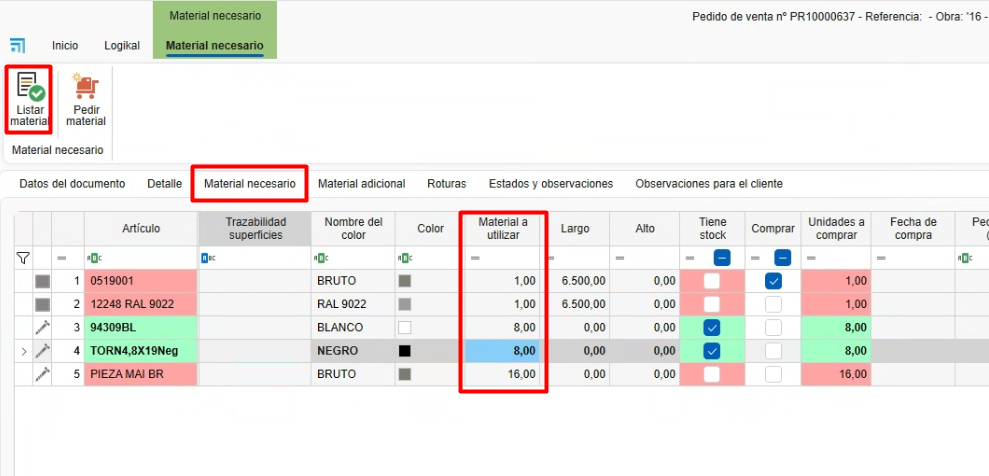

Distinte base (Raggruppamento materiali)
1. Introduzione
Questo manuale spiega passo dopo passo come utilizzare la funzionalità delle Distinte base.
Le distinte base si definiscono da ENBLAU, raggruppando materiali propri creati da enMATERIALS.
Inoltre, è possibile raggruppare questi materiali e generare le unità necessarie secondo diverse condizioni, come le dimensioni, la posizione delle sezioni, la distanza o mediante formule.
2. Distinte base
- Accedere alle distinte base da Magazzini → Distinte base.

2.1. Creazione di Distinte base
-
Per creare una distinta base, segui questi passi:
-
Dall'elenco delle distinte base, seleziona il pulsante Nuovo per creare una nuova distinta base.

-
Si aprirà una finestra dove dovrai definire i seguenti campi:
- Nome: Definisce il nome della distinta base che stai creando.
- Famiglia: Campo opzionale dove si indicano le cartelle e sottocartelle in cui si desidera aggiungere la distinta base. Questo campo si rifletterà successivamente nell'albero delle distinte base all'interno della sezione Documenti di vendita.
- Descrizione: Breve descrizione della distinta base.
- Descrizione vendite: Indica se la descrizione per le vendite è diversa dalla descrizione generale della distinta base.
- Immagine: Permette di aggiungere un'immagine o cattura rappresentativa della distinta base.

-
La sezione Prodotto finito è ad uso esclusivo della postazione di Trasformazione in enCONTROL. In questo campo deve essere indicato il riferimento di un materiale di tipo pezzo creato in precedenza in enMATERIALS. Una volta che il prodotto è passato dalla postazione di Trasformazione, i materiali definiti nella distinta base verranno automaticamente scaricati e verrà generato un carico di magazzino con il riferimento del materiale indicato in questa sezione.

2.2. Raggruppare materiali
-
Una volta creata la distinta base, i passi seguenti permettono di raggruppare e generare i materiali corrispondenti:
-
Dall'albero degli articoli, situato a destra, trascina i materiali che devono essere generati per quella distinta base.

-
Poi definisci le seguenti condizioni secondo necessità:
- Unità: Indica le unità che devono essere generate del materiale.
- Distanza: Specifica ogni quanto tratto deve essere generato il materiale.
Esempio: 1 vite ogni 100 mm di tratto. - Da: Definisce, insieme alla distanza, da quale punto si inizia a contare.
- Posizione: Mostra un elenco per indicare la posizione del tratto dove deve essere generato il materiale.
Esempio: Superiore, inferiore, destra, sinistra. - Lunghezza: Permette di indicare una lunghezza fissa o usare una formula.
Esempio: L-50 → calcola la lunghezza della barra meno 50 mm. - Altezza: Permette di indicare un'altezza fissa o usare una formula.
Esempio: A-50 → calcola l'altezza della superficie meno 50 mm. - Taglio A: Definisce il tipo di taglio del lato A della barra.
Esempio: Taglio a 90° o 45°. - Taglio B: Definisce il tipo di taglio del lato B della barra.
Esempio: Taglio a 90° o 45°.

-
Nota: I campi si attivano in base al tipo di calcolo del materiale (pezzo, barra, giunto o superficie).
3. Come usare le distinte base
-
Da qualsiasi documento di vendita (Preventivo, Ordine, Produzione, ecc.), accedi alla sezione Distinte base, situata nella parte destra del documento.
Quindi, segui questi passi:-
Trascina una distinta base nella posizione del documento.

-
Si aprirà una finestra dell'editor delle distinte base, dove potrai modificare i valori prima di accettare.

-
Una volta accettato, potrai modificare le misure, i prezzi e gli sconti.
Se i materiali hanno associata una tariffa di vendita, il prezzo sarà calcolato automaticamente per componente.
-
Accedi a Materiale necessario per elencare i materiali con le unità definite secondo le condizioni della distinta base ed effettuare l'ordine di acquisto al fornitore.

-
 Español
Español
 English
English
 Italiano
Italiano
 Português
Português